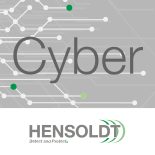

|  |
In the development of high assurance systems with military grade
security, HENSOLDT Cyber works intensively with the seL4
microkernel. As we aim to increase the usability of seL4
technologies, we develop user-friendly components bundled in the
seL4 operating system TRENTOS, providing an easy-to-use basis
for the development of embedded systems. We support our
customers by guiding them with our seL4 experience and improving
their development time by advising them on the correct
application of the seL4 technologies. HENSOLDT Cyber GmbH is an Endorsed Service Provider for seL4-based systems in operating systems:
|